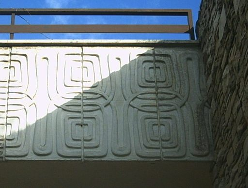

← Tutte le opereAll works
UR 050
Casa – motivo decorativoHouse – decorative motif
gesso, 1978plaster, 1978
- CatalogoCatalogue
- UR 050
- AnnoYear
- 1978
- TecnicaMedium
- gessoplaster
- TipoType
- bassorilievobas-relief
- DimensioniDimensions
- da completareto be completed
- CollocazioneLocation
- da completareto be completed
- VisteViews
- 1